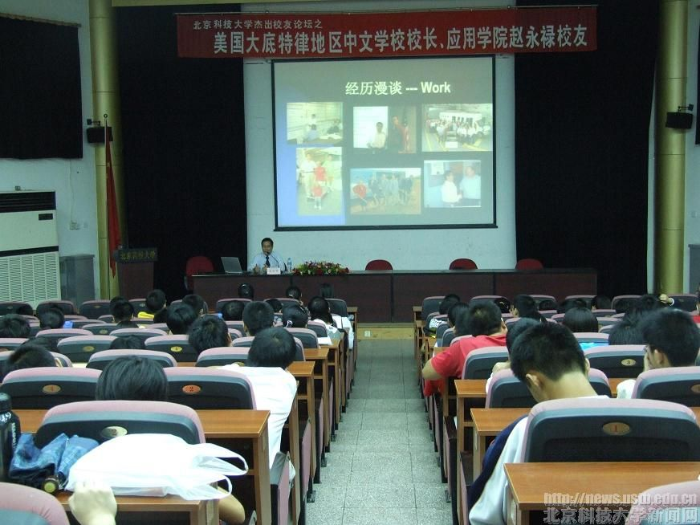
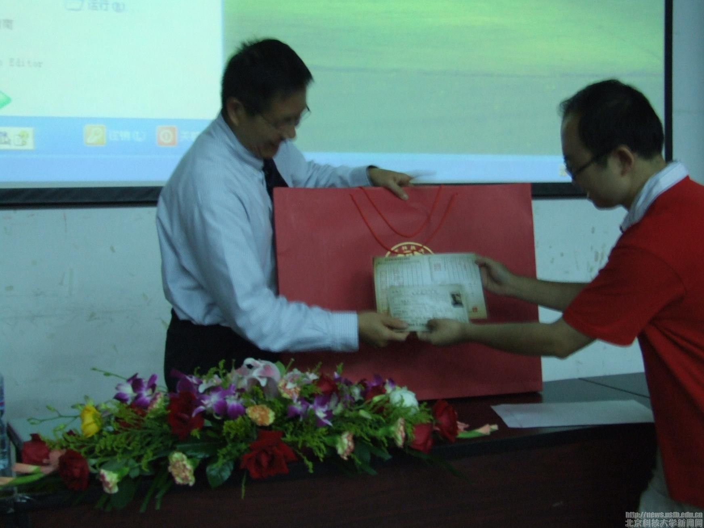

Yonglu Zhao Seminar
9月13日 下午3:30,我校杰出校友创业论坛在学术报告厅如期举行。杰出校友创业论坛自2006年创立以来，已经邀请了众多杰出校友回校做优秀的论坛报道，而报告 会的目的更在于让同学们更多地了解大学生以后工作所需要具备的条件，并鼓舞广大同学做好把握机遇和面对挑战的充分准备。
本次报告会的主讲人是我校应用学院力学专业78级校友赵永禄先生，赵先生于1982年在北京钢铁学院（即北京科技大学）获得学士学位，1984年取得硕士学位后留校任教。1990年，赵永禄先生赴美国密苏里大学攻读博士学位，主修机械与航天专业，于1993年毕业并任福特公司发动机系统专家，曾两次获得设计质量奖。此次归国是受南京外国专家局邀请回国做汽车发动机组的报告。

论坛在一开始就充满了严肃紧张的气氛。赵先生的此次论坛会主要包括两大内容，其一作为一名学长的身份与科大学生交流目前汽车行业的大体状况，其二为我们介绍他在美国的学习以及生活感悟。在讲到目前世界上的汽车行业的状况时，对北科大新开设了有关汽车方向的专业赵先生感到很欣慰。随后他又介绍了自己在美国的生活工作体会，赵先生的话让在场的同学们颇有“听君一席话，胜读十年书”的感觉。其中他着重谈了自己工作的经验体会和作为一个成功的人士对当代大学生以后工作应具有的品质与能力的看法。赵先生强调，在工作时一定要对自己有自信，不要把自己限制在某一方面的工作上，要对自己不熟的工作有信心完成，不断学习，不断完善自我。他还提出在工作中要学会经常不断的与他人交流，不搞个人主义。随后谈到自己的生活时，赵先生提出在遇到对自己压力很大的事情的时候，要学会保持心理平衡。论坛中，赵先生的讲述与在场同学产生了共鸣，使得论坛气氛变得热烈，在场同学纷纷向他提出了许多现实意义很强的问题，问题涵盖“怎样在以后的工作竞争中获得优胜” ，“怎样处理好在国外异地的心情感受”等等，赵先生对这些问题都一一作了详细的解答，他认真负责的回答和真诚面对同学们的态度再次将论坛气氛推向了高潮。最后，在论坛结束时赵先生对同学们致以了衷心的祝愿。

本次论坛的召开实现了成功创业校友与在校同学的零距离接触。在场的的同学们都认为参加这样得论坛活动对自己的启发和帮助是相当大的，它为我们在校大学生以后的学习生活起到了重要的指导作用，同时我们也希望以后的论坛活动越来越好。
2007/09/13